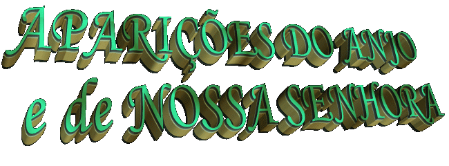
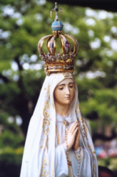
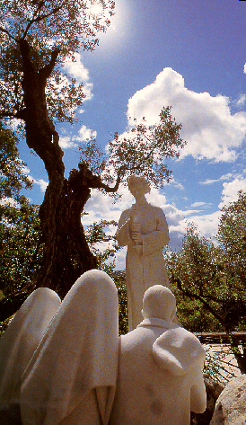
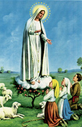
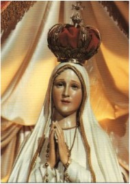
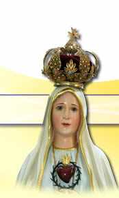
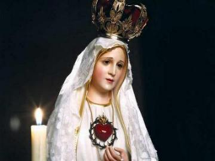
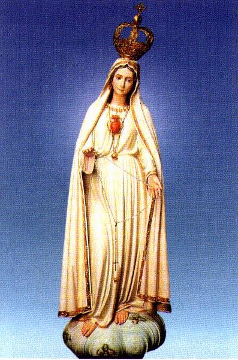
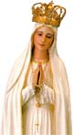

A partir de 1915, conforme os hábitos da
época, Lúcia foi apascentar o rebanho da família numa colina chamada Cabeço,
que não ficava distante de Aljustrel. As 
Num daqueles dias, em que apascentava as ovelhas com Teresa Matias, a sua irmã Maria Rosa e Maria Justino que morava numa aldeia próxima chamada de Casa Velha, após o lanche do meio-dia, elas estavam rezando o Terço, quando aconteceu um evento extraordinário, que Lúcia descreveu assim:
- "Tínhamos começado a reza do Terço quando vimos diante dos nossos olhos, como suspenso no ar, por cima do bosque, uma figura que parecia uma estátua de neve, que os raios do sol tornavam um pouco transparente".
- "O que é aquilo, perguntaram as minhas companheiras um pouco espantadas."
- "Não sei" .Respondeu Lúcia.
- "Continuamos a nossa reza mantendo sempre os olhos fixos naquela figura, que desapareceu logo depois de nós termos acabado as orações."
Conforme o seu costume, Lúcia decidiu não comentar o assunto, mas as suas companheiras contou o acontecido para os seus familiares e amigos, e assim, a notícia logo se espalhou.
Passados alguns dias, Lúcia e as companheiras voltaram com os seus rebanhos ao mesmo lugar, e repetiu-se o mesmo evento. Decorridos mais alguns dias ou meses, o fato se repetiu pela terceira vez.
Os comentários surgiam, mas as meninas não sabiam explicar de que se tratava. A mãe da Lúcia quis saber detalhes com a filha... Em vão, porque ela não sabia dizer o que era aquele vulto, que segundo as suas palavras, definiu dizendo: que parecia estar "enrolado num lençol".
No ano seguinte (1916), os pais de Francisco e Jacinta permitiram que eles fossem apascentar o rebanho da família, mesmo sendo ainda bastante pequenos. Lúcia então, abandonou a companhia das outras meninas e foi apascentar o rebanho na companhia de seus pequenos primos. Todas as manhãs encontravam-se à hora marcada, com seus rebanhos, perto de uma minúscula lagoa chamada Barreiro, que ficava ao pé da colina. Ali reunidos, decidiam onde iam apascentar. O trabalho não era pesado e lhes sobrava bastante tempo para brincar e rezar o Terço.
Certo dia os três pequenos levaram o rebanho para o campo chamado "Chousa Velha", que pertencia a família "Dos Santos". Como tinha chovido na parte da manhã, eles foram na direção de um olival do padrinho da Lúcia, onde se encontravam umas pequenas grutas, que podiam servir de abrigo. Já tinham rezado o Terço e estavam com suas brincadeiras, quando inesperadamente levantou-se um vento forte que sacudiu as árvores e logo em seguida, apareceu uma figura cândida por cima do olival. Enquanto se aproximava, os três pastores puderam observar que era um jovem muito bonito, branco, quase transparente como se fosse de cristal. Diante deles, ele falou:
- "Não tenhais medo. Eu sou o Anjo da Paz. Rezai comigo"
- "Meu DEUS, eu acredito, adoro, espero e amo-VOS! Eu peço-VOS perdão para os que não VOS adoram, não esperam e não VOS amam".
A seguir, pediu as crianças para repetir a oração três vezes e levantou-se dizendo:
- "Orai assim. Os Corações de JESUS e Maria ficarão atentos à voz das vossas súplicas".

A segunda aparição do Anjo verificou-se no verão (Junho/Julho) deste mesmo ano (1916). As crianças brincavam por trás da casa "Dos Santos", perto do poço chamado de "Arneiro". De repente apareceu o mesmo Anjo, dizendo:
- "O que é que vocês estão a fazer? Orai, orai muito! Os Corações Santíssimos de JESUS e Maria têm para vocês desígnios de misericórdia. Oferecei constantemente ao Altíssimo orações e sacrifícios".
Lúcia perguntou que sacrifícios deviam fazer e o Anjo explicou:
- "Oferecei a DEUS o sacrifício de tudo o que puderem, como ato de reparação dos pecados com os quais ELE é ofendido e para impetrar a conversão dos pecadores. Atraí assim sobre a vossa pátria, a paz. Eu sou o seu Anjo da Guarda, o Anjo de Portugal. Sobretudo, aceitai e suportai com submissão os sofrimentos que DEUS vos mandará".
As crianças ficaram muito impressionadas e já não tinham vontade para brincar e nem para conversar. E também desta vez, o Francisco não ouviu as palavras do Anjo, as meninas que lhe repetiram. A partir daquele momento as crianças procuraram se afastar de seus conterrâneos, a fim de se consagrarem integralmente a oração e a meditação.
Em Setembro ou Outubro de 1916, o Anjo lhes apareceu pela terceira vez. Os três pequenos pastores apascentavam os seus rebanhos no monte sobre Valinhos. Depois do almoço decidiram rezar o Terço na gruta. Prostrados eles repetiam a Oração que o Anjo lhes havia ensinado, quando o Mensageiro Divino lhes apareceu novamente. Desta vez ele trazia na mão um Cálice e uma Hóstia. Da Hóstia caíam dentro do Cálice gotas de Sangue. O Anjo deixou a Hóstia e o Cálice suspensos no ar e prostrado, repetiu três vezes a seguinte oração:
- "SANTÍSSIMA TRINDADE, PAI, FILHO e ESPÍRITO SANTO, eu VOS ofereço o preciosíssimo Corpo, Sangue, Alma e Divindade de NOSSO SENHOR JESUS CRISTO, presente em todos os sacrários da Terra, em reparação de todos os ultrajes, sacrilégios e indiferenças com os quais ELE é ofendido. E para os merecimentos infinitos do seu Santíssimo Coração e do Coração Imaculado de Maria, peço-vos a conversão dos pobres pecadores".
Depois levantou-se, tomou nas mãos o Cálice e a Hóstia, dando o conteúdo do primeiro ao Francisco e a Jacinta e dando a Hóstia para a Lúcia, dizendo-lhes:
"Tomai e bebei o Corpo e o Sangue de JESUS CRISTO, horrivelmente ultrajado pelos homens ingratos. Reparai os crimes deles e confortai o vosso DEUS".
Depois da comunhão milagrosa, os meninos ficaram como que paralisados e só a noitinha se aperceberam de que era necessário levar as ovelhas para casa. E também nos dias que se seguiram, cheios da atmosfera do sobrenatural, não tinham a coragem de tocar no assunto. As crianças ficaram cheias de alegria e inundadas com uma imensa paz interior.

AS APARIÇÕES DE NOSSA SENHORA
Em 1917, Lúcia tinha 10 anos, Francisco tinha
9 e Jacinta 7 anos. Após as Aparições do Anjo, por uma razão muito normal, os três primos
ficaram mais unidos, além do 
- "Está relampejando. Vai haver trovoada. É melhor irmãos para casa, antes que venha a chuva".
Os primos concordaram e sem mais, puseram-se a caminho, tocando as ovelhas em direção a estrada. Ao passarem junto de uma azinheira grande, novo relâmpago, mais deslumbrante que o primeiro. Com redobrado susto aumentaram os passos, mas chegando ao fundo da Cova pararam atônitos e maravilhados: bem a frente, a dois passos de distância sobre uma pequena azinheira de um metro e poucos centímetros de altura, apareceu-lhes uma jovem e belíssima SENHORA, toda feita de luz, mais resplandecente que o sol. Ela trazia no rosto uma expressão de maternal bondade e os saudou dizendo:
- "Não tenhais medo, porque EU não vos faço mal".
 Eles fascinados permaneceram contemplando a
linda Visão... Estavam tão perto, que a auréola de luz que a circundava, os
envolveram também. Ela parecia ter de 15 a l8 anos de idade e o seu vestido, era
como se fosse de um tecido de luz, mais branco que a neve, com as mangas
relativamente estreitas e fechado no pescoço com um ligeiro franzido. O
comprimento descia até os pés, que mal se viam e estavam, como que, levemente
apoiados sobre a azinheira. A cabeça estava coberta com um manto branco, que caía
modestamente sobre os ombros, todo debruado a ouro, ou seja, com fios de ouro à
volta dele. As mãos estavam postas à altura do peito e a cabeça direita em
frente, permitindo que ELA olhasse por cima das mãos, apresentando a face serena,
com graça e ternura, mas mantendo a fisionomia séria. Da mão direita
pendia um lindo rosário de contas brilhantes como pérolas, terminado por uma
Cruz de vivíssima luz prateada. O único adereço era um fino colar de ouro-luz
pendente sobre o peito e rematado, quase à cintura, por uma pequena esfera do
mesmo metal. O rosto com linhas puríssimas e infinitamente delicadas
apresentava-se com suprema beleza, mas aparentemente velado por
uma leve sombra de tristeza.
Eles fascinados permaneceram contemplando a
linda Visão... Estavam tão perto, que a auréola de luz que a circundava, os
envolveram também. Ela parecia ter de 15 a l8 anos de idade e o seu vestido, era
como se fosse de um tecido de luz, mais branco que a neve, com as mangas
relativamente estreitas e fechado no pescoço com um ligeiro franzido. O
comprimento descia até os pés, que mal se viam e estavam, como que, levemente
apoiados sobre a azinheira. A cabeça estava coberta com um manto branco, que caía
modestamente sobre os ombros, todo debruado a ouro, ou seja, com fios de ouro à
volta dele. As mãos estavam postas à altura do peito e a cabeça direita em
frente, permitindo que ELA olhasse por cima das mãos, apresentando a face serena,
com graça e ternura, mas mantendo a fisionomia séria. Da mão direita
pendia um lindo rosário de contas brilhantes como pérolas, terminado por uma
Cruz de vivíssima luz prateada. O único adereço era um fino colar de ouro-luz
pendente sobre o peito e rematado, quase à cintura, por uma pequena esfera do
mesmo metal. O rosto com linhas puríssimas e infinitamente delicadas
apresentava-se com suprema beleza, mas aparentemente velado por
uma leve sombra de tristeza.
Depois de alguns minutos em silêncio, embevecidos que estavam admirando Aquela maravilhosa Visão, Lúcia perguntou:
- "De que lugar é Vossmecê?"
- "O meu lugar é o Céu". Respondeu a Aparição apontando para lá.
- "E que vem Vossmecê cá, fazer ao mundo?"
- "Venho para te dizer que venhais aqui a esta hora todos os meses, até fazer seis meses; e no fim, vos direi quem sou e o que quero. Depois voltarei aqui uma sétima vez".
- "Sabe me dizer se eu vou para o Céu?"
- "Sim, vais".
- "E a minha prima Jacinta?"
- "Vai."
- "E o meu primo Francisco?"
- "Ele também. Mas deve rezar as suas contas"...
Em seguida a SENHORA perguntou-lhes:
_ "Quereis oferecer-vos a NOSSO SENHOR para aceitardes de boa vontade todos os sofrimentos que ELE vos quiser enviar, em reparação de tantos pecados com que se ofende a Divina Majestade, em desagravo das blasfêmias e ultrajes feitos ao Imaculado Coração de Maria e para obter a conversão dos pecadores, que tantos caem no inferno?"
- "Sim queremos". Respondeu Lúcia com entusiasmo em nome dos três.

Passados alguns instantes, a Aparição recomendou que "rezássemos o Terço todos os dias com devoção, a fim de ser alcançada a paz para o mundo e o fim da guerra."
Dito isto, ELA começou a Se elevar serenamente, afastando-Se em direção ao nascente. Terminava a Primeira Aparição de NOSSA SENHORA em Fátima.

QUARTA-FEIRA, DIA 13 DE JUNHO - SEGUNDA APARIÇÃO
Na hora marcada, as três crianças já estavam na Cova da Iria. Cerca de 50 pessoas curiosas foram até lá para ver o que ia acontecer. Depois que rezaram o Terço, viram o relâmpago.
- "Já vem a SENHORA!" Exclamou Lúcia, correndo para junto da carrasqueira pequena. Os primos a seguiram.
- "Vossmecê que me quer?" Perguntou Lúcia
- "Quero que aprendas a ler. Depois te direi o que desejo".
NOSSA SENHORA também disse que a Jacinta e o Francisco cedo iriam para o Céu. Lúcia manifestou uma grande tristeza por ficar sozinha. Então ELA falou:
- "Não ficarás sozinha filha! Tu sofres muito? Não desanimes. Eu nunca te deixarei. O meu Coração Imaculado será o teu refúgio e o caminho que te conduzirá até DEUS."
Ao proferir estas últimas palavras, nossa
MÃE SANTÍSSIMA abriu as mãos e pela segunda vez incidiu sobre os videntes
aquela luz imensa, em que se viam 

SEXTA-FEIRA, DIA 13 DE JULHO - TERCEIRA APARIÇÃO
As notícias sobre a linda Visão espalhou-se
para longe, de modo que quase 5.000 pessoas estavam lá na Cova da Iria. Como da
vez anterior, os pequeninos ajoelharam diante da azinheira e Lúcia rezou o
Terço, que o povo também ajoelhado, devotamente acompanhou. Ao meio-dia
manifestou-se a Aparição:
- "Quero que venham aqui no dia 13 do mês que vem; que continuem a rezar o Terço todos os dias em honra de NOSSA SENHORA DO ROSÁRIO, para obter a paz do mundo e o fim da guerra, porque só ELA poderá valer-lhes. Em outubro direi quem sou, o que quero e farei um milagre que todos hão de ver para acreditar."
Lúcia fez diversos pedidos, atendo as
solicitações das pessoas que a procurava. NOSSA 
- "Sacrificai-vos pelos pecadores e dizei muitas vezes, em especial, sempre que fizerdes algum sacrifício: Ó JESUS, é por Vosso Amor, pela conversão dos pecadores e em reparação pelos pecados cometidos contra o Imaculado Coração de Maria".
A VIRGEM MARIA ao pronunciar estas últimas palavras, descreve Lúcia: "ELA abriu de novo as mãos, como nos dois meses passados. O reflexo pareceu penetrar na terra e vimos como que, um Mar de Fogo. Mergulhados nesse fogo, os demônios e as almas, como se fossem brasas transparentes e negras, ou bronzeadas, com forma humana, que flutuavam no incêndio, levadas pelas chamas que delas mesmas saíam juntamente com nuvens de fumo, caindo para todos os lados, semelhante ao cair de fagulhas nos grandes incêndios, sem peso e nem equilíbrio, entre gritos e gemidos de dor e desespero, que horrorizava e fazia estremecer de pavor. Os demônios distinguiam-se por formas horríveis e asquerosas, de animais espantosos e desconhecidos, mas transparentes como negros carvões em brasa. Assustados e como que a pedir socorro, levantamos a vista para NOSSA SENHORA, que nos disse com bondade e tristeza":
Ali é o Inferno, onde estão os demônios e as almas dos pecadores. NOSSA SENHORA pediu a Consagração da Rússia ao seu Imaculado Coração e a Comunhão Reparadora nos primeiros sábados durante cinco sábados seguidos, pela a conversão dos pecadores e a paz no mundo. (Na próxima página, estão as Mensagens com as palavras de NOSSA SENHORA sobre estes assuntos). Por último ELA recomendou:
- "Quando rezardes o Terço dizei depois de cada mistério: Ó meu JESUS! Perdoai-nos! Livrai-nos do fogo do Inferno; levai as alminhas todas para o Céu, principalmente aquelas que mais precisarem".


DOMINGO, DIA 19 DE AGOSTO - QUARTA APARIÇÃO
Os três pequenos Pastores não puderam comparecer ao encontro com a Bela SENHORA no dia 13 de Agosto, porque estavam presos em Vila Nova de Ourém. Contudo, no dia 19, estando com o rebanho no sítio de Valinhos NOSSA SENHORA lhes apareceu e disse:
- "Quero dizer-vos que continueis a rezar o Terço todos os dias. No último mês farei o milagre para que todos acreditem. Se não vos tivessem levado para a aldeia, o milagre seria mais grandioso. Mas em compensação, vocês verão (a Lúcia e os primos) além do milagre esperado, a presença de São José com o Menino JESUS para dar a paz ao mundo. NOSSO SENHOR abençoando o povo. Nossa Senhora sob a figura de NOSSA SENHORA DAS DORES".

QUINTA-FEIRA, 13 DE SETEMBRO - QUINTA APARIÇÃO
Calculou-se uma multidão de 15.000 a 20.000 pessoas na Cova da Iria para presenciar os acontecimentos daquele dia. Ao meio-dia em ponto, o sol começou a perder o brilho e a atmosfera tomou uma cor amarelada. Não houve quem não notasse este fato, que desde maio precedente, repetia-se sempre no dia 13 de cada mês, à mesma hora, antes da chegada de NOSSA SENHORA. Podia-se até ver a lua e as estrelas no firmamento. A nuvenzinha branca visível até o extremo da Cova, envolvia a azinheira e também os videntes. Do Céu choviam como flores brancas ou flocos de neve que não tocavam o chão, mas desfaziam-se a certa altura e também, quando as pessoas queriam pegar os flocos com a mão ou apará-los com o chapéu. Este último fenômeno repetiu-se algumas vezes em dias de peregrinação. NOSSA SENHORA falou:

- "Continuem a rezar o Terço para alcançar o fim da guerra. Em Outubro virá também NOSSO SENHOR, NOSSA SENHORA DAS DORES e do CARMO, SÃO JOSÉ com o MENINO JESUS, para abençoar o mundo. DEUS está contente com os vossos sacrifícios, mas não quer que durmam com a corda. Trazei-a só durante o dia".
Para fazerem mais penitências em benefício dos pecadores, os três pastores tiveram a idéia de dar cinco nós cegos num pedaço de corda e amarrá-lo bem justo na cintura, para flagelar o corpo. Assim ficavam o dia todo, inclusive dormiam com a corda. Sem dúvida, um gesto verdadeiramente heróico feito por três inocentes crianças, que só pensavam em encontrar um melhor meio de agradar a DEUS.
SÁBADO, DIA 13 DE OUTUBRO - SEXTA APARIÇÃO
(Esta Aparição está descrita na Página "O MILAGRE DO SOL")